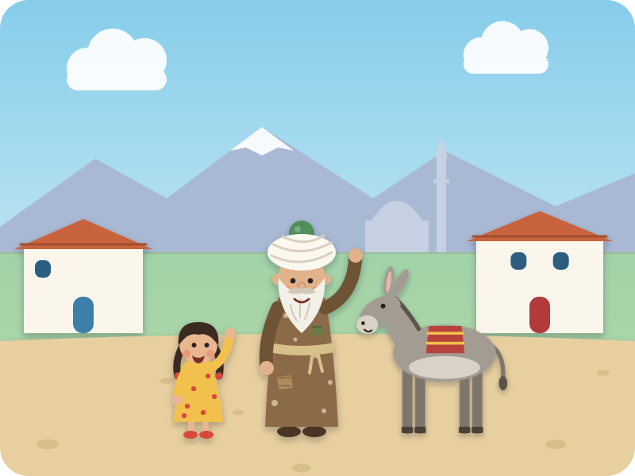
A Nasreddin Hodja story from Türkiye
Eat, My Coat, Eat!
"Story, story — are your ears open?" Kai: "Open!"
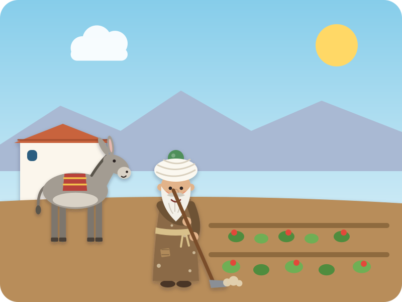
In the town of Akşehir lived a man called Nasreddin Hodja. He had a big white turban, a long white beard, and a grey donkey.
All day long he dug in his garden, until his old robe was patched and dusty.
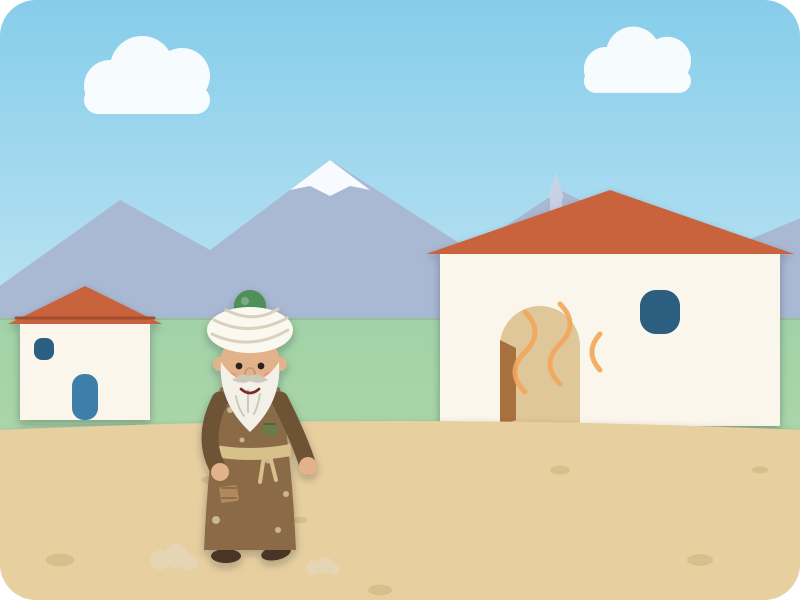
One evening there was a feast at the big house. Hodja sniffed. "Mmm… soup!" Kai sniffs
He was too busy to change, so off he went, just as he was. Puff, puff went the dust.
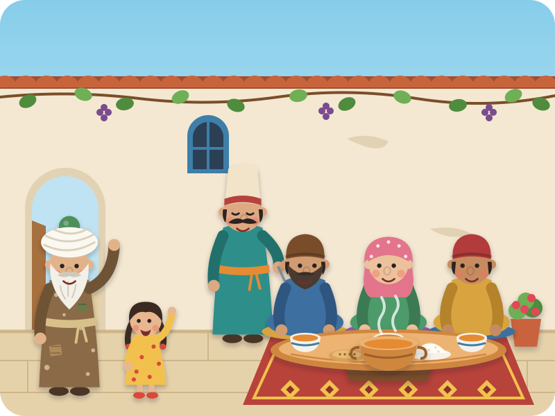
At the gate, little Elif waved. "Hello, Hodja!" Kai waves: "Hello, Hodja!"
"Hello, Elif!" said Hodja. But nobody else even looked up. They were all too busy chatting.
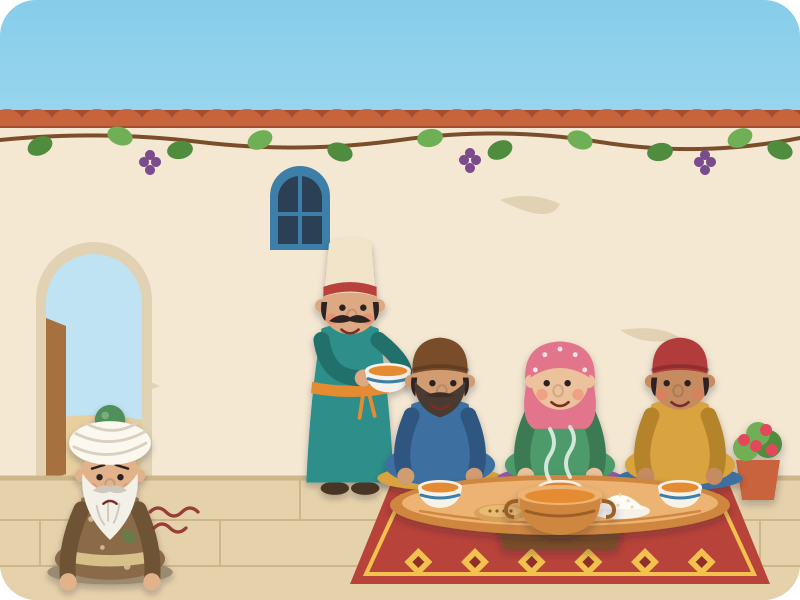
Hodja sat down at the very end. Nobody talked to him. Nobody passed him any soup.
His tummy went "Grumble, grumble!" Kai rumbles his tummy
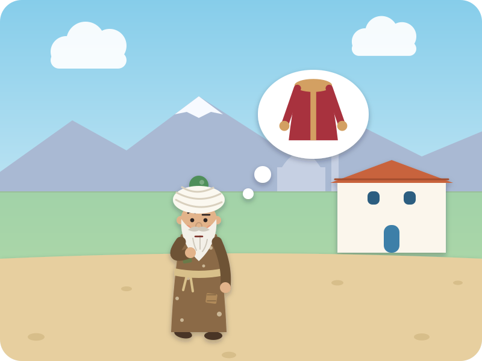
So Hodja got up and walked home. He stroked his beard. "Hmm!" Kai strokes his chin: "Hmm!"
Then he had an idea.
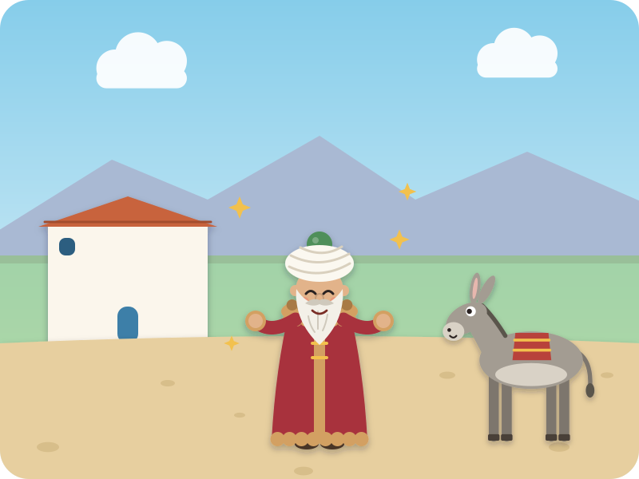
At home, Hodja put on his very best coat — long and red, with soft golden fur and shiny buttons.
Even the donkey stared! Kai makes big donkey eyes
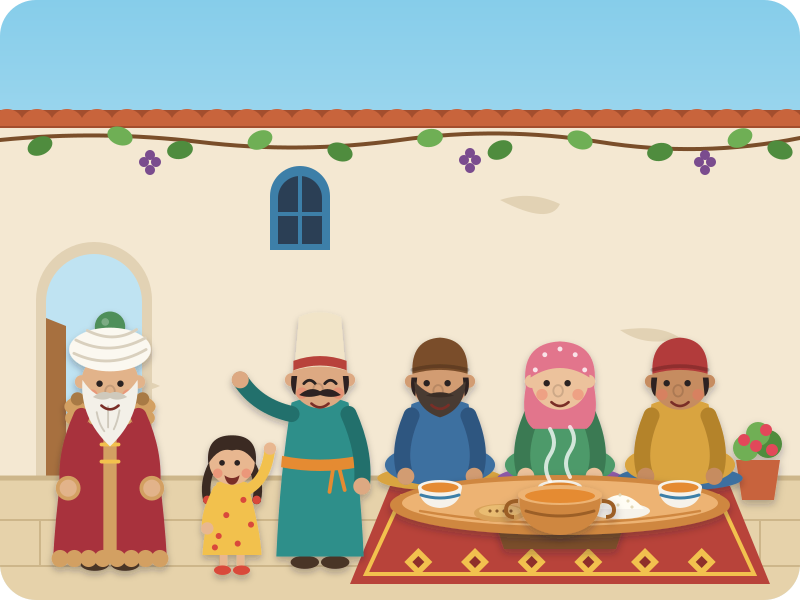
Back at the gate, Elif waved, just the same as before. "Hello, Hodja!" Kai: "Hello, Hodja!"
But this time the host came running. "Welcome! Welcome, Hodja!"
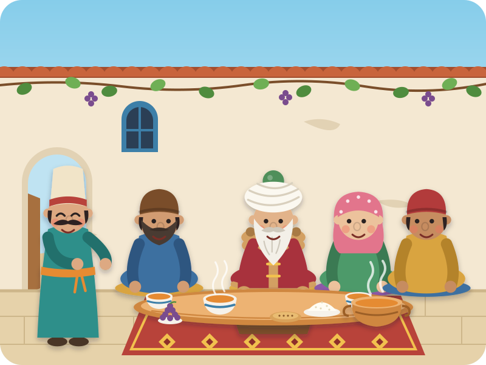
"Sit here, Hodja, in the best seat! Have some soup! Have some rice!"
Now everybody wanted to talk to Hodja.
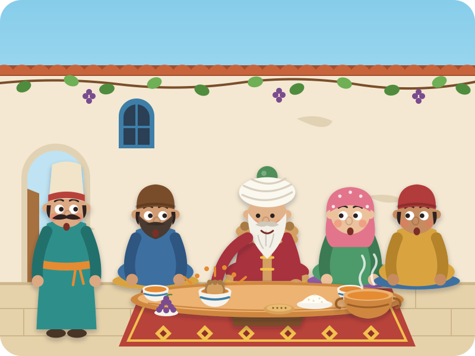
Hodja picked up his furry sleeve… and dipped it in the soup!
"Eat, my coat, eat!" Kai: "Eat, my coat, eat!"
Slurp! Kai: "Slurp!"
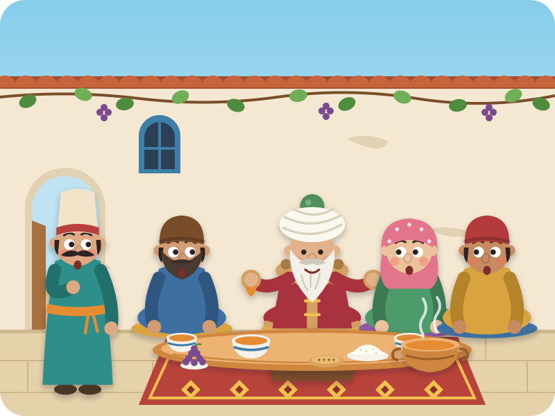
"Hodja! What are you doing?"
"In my old clothes, nobody looked at me," said Hodja. "In my fine coat, it's Welcome! So the coat must be the guest — not me. Eat, my coat, eat!"
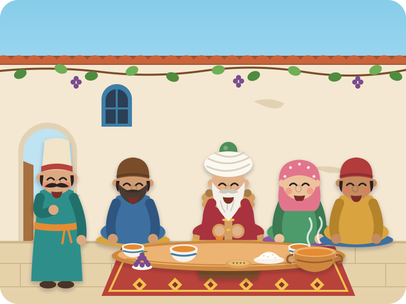
The host began to laugh. "You're right, Hodja. I'm sorry. A friend is a friend, whatever he wears."
And everyone laughed together. Kai laughs
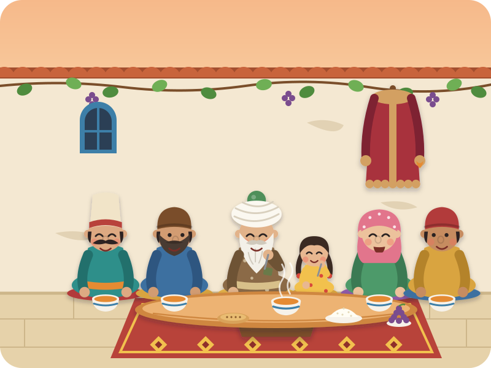
Hodja hung his coat on a peg. Then he sat down next to Elif — who had said hello both times — and shared his soup with her. Slurp, slurp! Kai slurps
Because it's who you are that counts, not what you wear.
The End
"Snip, snap, snout — this tale's told out."
Swipe back to read it again
Driving? Tell it without the page · six beats
The picture book is for home, bedtime, or a passenger. In the car, tell it from memory — bold is Kai's part.
- Nasreddin Hodja digs in his garden all day, so his old robe is patched and dusty. One evening he goes to a feast just as he is.
- Little Elif waves — "Hello, Hodja!" — but nobody else looks at him, and nobody passes him the soup. "Grumble, grumble!"
- Hodja walks home, strokes his beard — "Hmm!" — and puts on his finest fur coat.
- Back at the feast, Elif says "Hello, Hodja!" just the same — but now the host cries, "Welcome! Sit here! Have some soup!"
- Hodja dips his furry sleeve in the soup: "Eat, my coat, eat!" Slurp! "The coat must be the guest — not me!"
- The host laughs and says sorry, Hodja hangs up his coat, and he shares his soup with Elif — slurp, slurp! It's who you are, not what you wear.
After the story · car-friendly wondering
"Who said hello to Hodja both times? Why was that kind?"
"Can a coat really eat soup? Why did Hodja pretend it could?"
"If a friend came to play in muddy clothes, how would you say hello?"
Where this story comes from
Nasreddin Hodja (Nasreddin Hoca in Turkish) is the best-loved joker of Turkish folk tales, and short funny stories about him are told across Türkiye, the Middle East, the Caucasus and Central Asia, where he is also called Molla Nasreddin or Afandi. Tradition says he lived in the 1200s and links him with the town of Akşehir, where a tomb said to be his still stands — but very little about the real man is certain. In 2022 UNESCO added the telling of Nasreddin Hodja anecdotes to its list of the Intangible Cultural Heritage of Humanity, from a joint nomination by Azerbaijan, Kazakhstan, Kyrgyzstan, Tajikistan, Türkiye, Turkmenistan and Uzbekistan. The coat story is one of the best known, and the Turkish saying "Ye kürküm ye!" ("Eat, my fur coat, eat!") comes from it. An early English version is in George Borrow's The Turkish Jester; or, The Pleasantries of Cogia Nasr Eddin Effendi (1884), which the folklorist D. L. Ashliman reprints in his online folktale collection: the Hodja is ignored at a bridal feast because of his shabby clothes, goes home and puts on a splendid fur-trimmed coat (a pelisse), is honoured when he comes back, and tells the coat to eat, since the honour was paid to it. Borrow's version has no soup: the Hodja simply invites the pelisse to eat. In many modern tellings, including Ashliman's own short retelling “Eat, My Coat, Eat”, the Hodja dips his sleeve in the soup, and we followed that form. Tellings also differ in how it ends. This retelling is our own, for a 4-year-old: the dusty garden clothes, the donkey, little Elif who says hello both times, the host's apology and everyone eating together at the end are our picture-book choices.